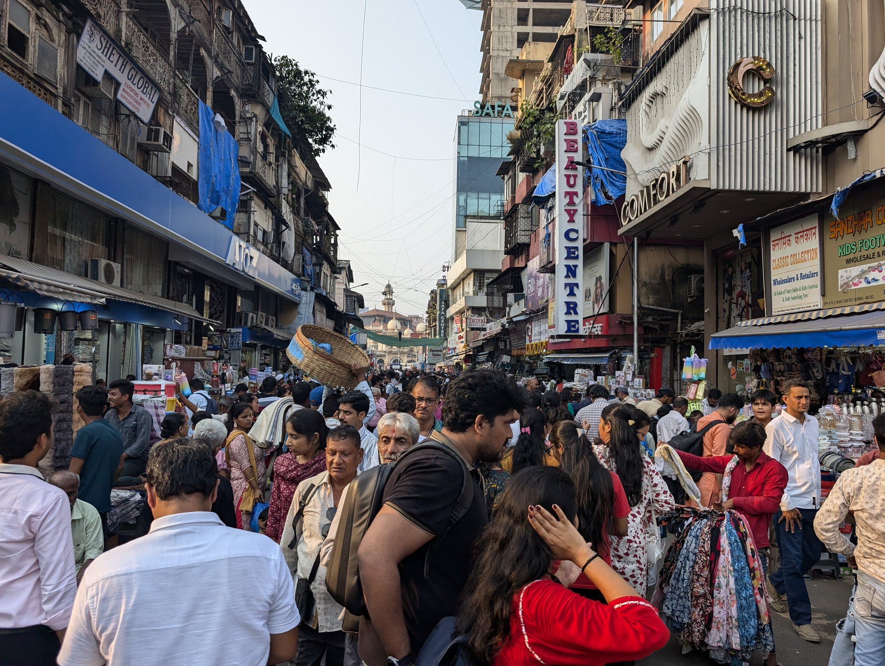
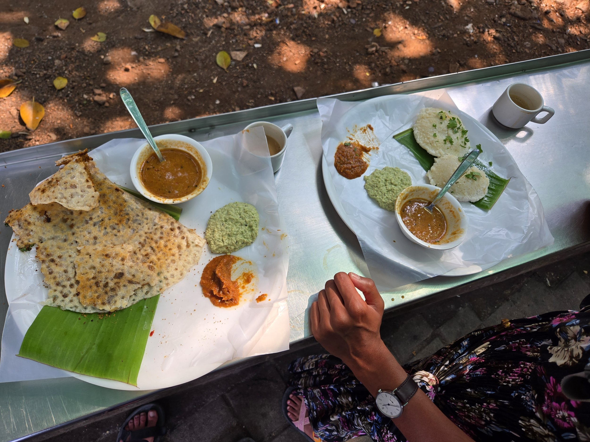
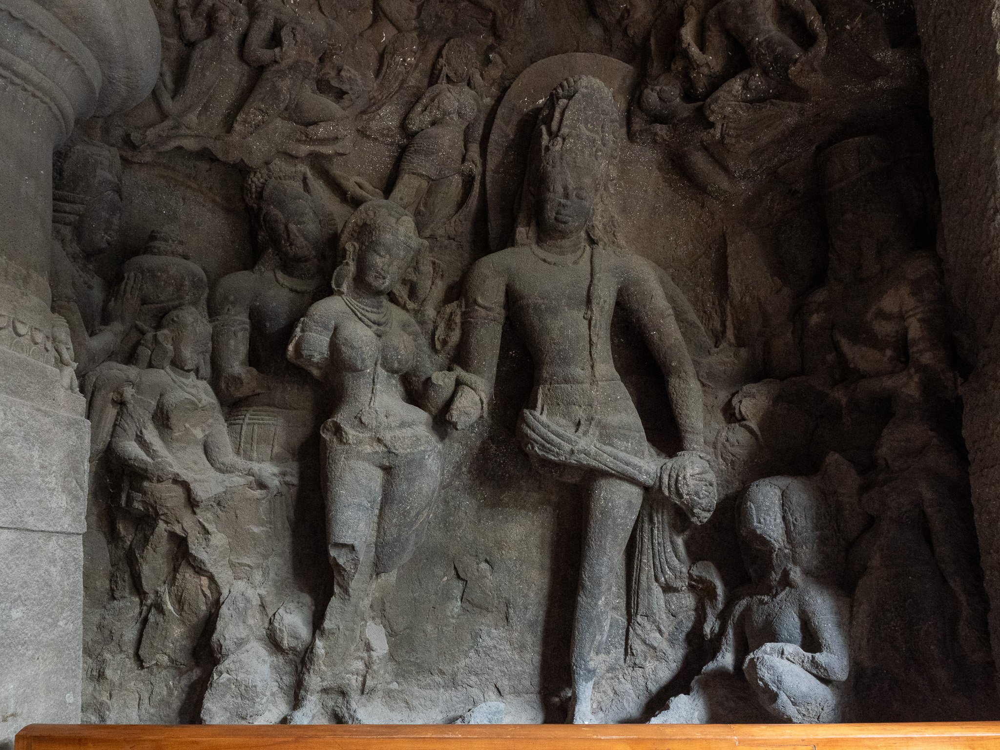
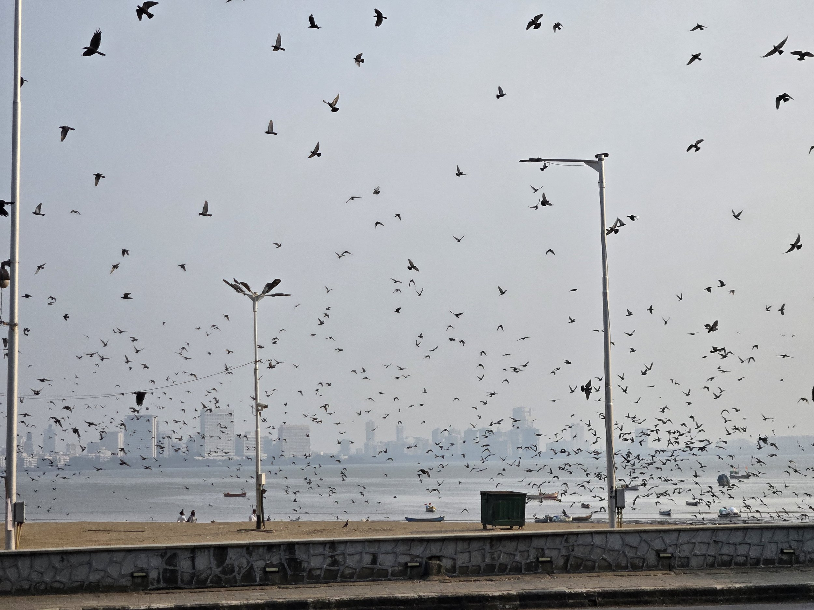
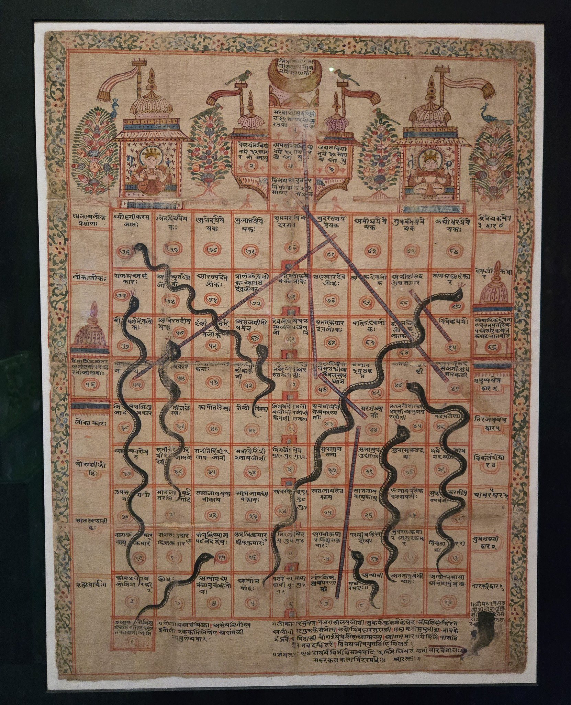
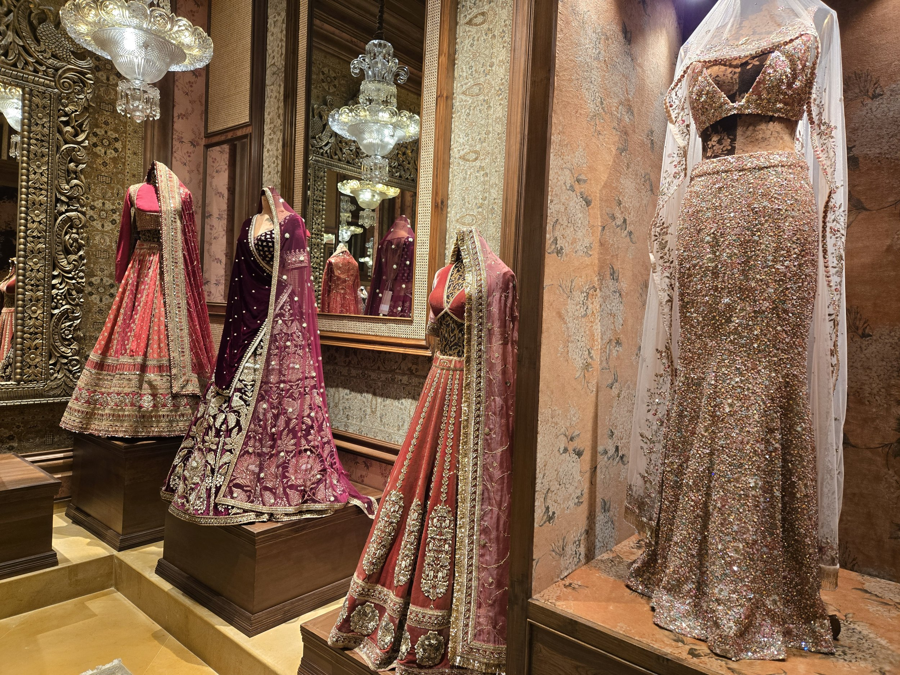
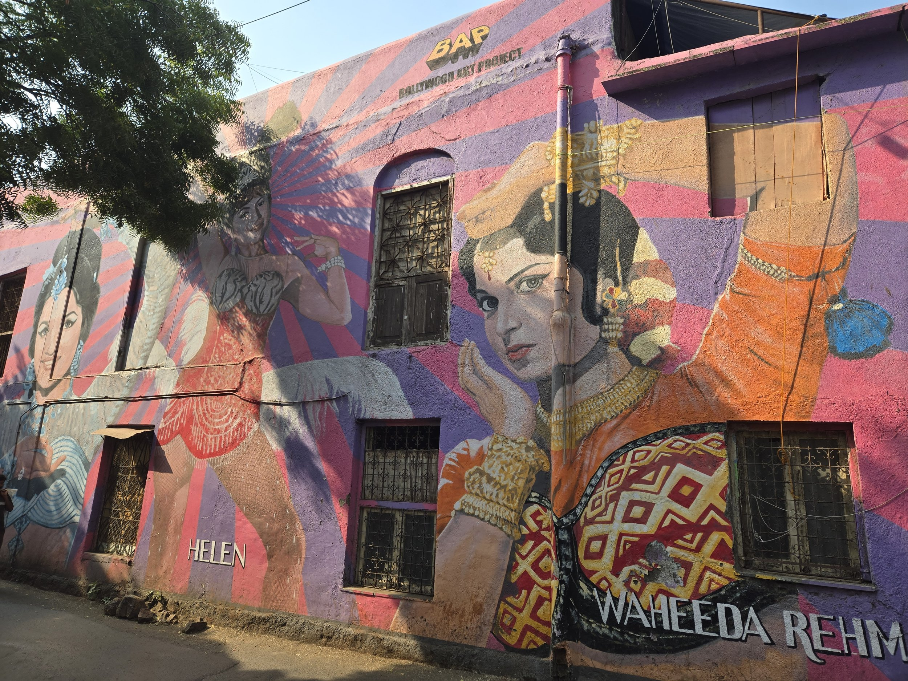
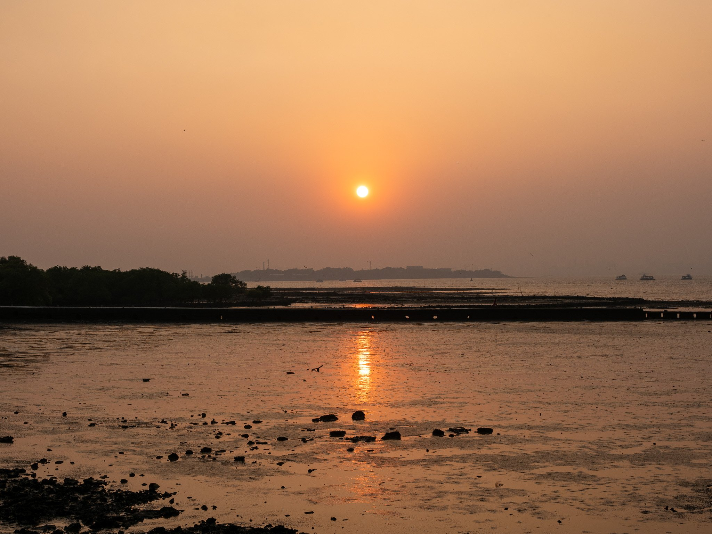

Diwali is my favorite holiday. As a kid, I remember going to Phantom Fireworks in Ohio around the time of the fourth of July and purchasing extra sparklers and flower pots and fountains that were on sale (sadly, no aerials) and stashing them in our basement until October or November to light them for Diwali. As I got older, Phantom Fireworks picked up on the fact that there were a good number of Diwali celebraters in Ohio and started doing special Diwali sales in the fall as well so hoarding became less required. It was always a special time of the year, lighting up the driveway with rows of candles, setting off our stash with friends and family, eating delicious, special meals, and doning new outfits.
>

However, I have never celebrated Diwali in India. I’d heard stories from my parents about how crazy it used to be for them. A bit more unabashedly outrageously noisy and celebratory because you don’t need to be afraid of having the neighbors call the cops on you. You do need to be afraid of losing fingers and/or toes with rogue fireworks. At least that is what I heard from mom and dad. This year, as we finished our travel in Jordan and were looking at flights to Bhutan, I noticed that we would almost definitely need to fly through India. And it was about to be Diwali. So I enthusiastically declared that we would go and see the party for ourselves.
Traveling to India is always slightly stressful for me. Especially when I was younger, there were certain expectations around how to dress or behave to adapt to the environment which isn’t unusual for the world (e.g. wearing longer pants in Jordan) but somehow, with India, I felt like I should be able to be who I am without any modifications. Of course, that’s irrational. Culture takes a long time to change. I’m Indian but not really Indian. There’s a name used for people like me; I’m an ABCD. American Born Confused Desi. So now, either my visits to India are very short (my last trip to India was two years ago for about 72 hours) or I just accept that I might get some ogling because of my American brashness and “scandalous” outfits. Or both. So it goes. I like shorts more than pants which I like way more than skirts and dresses.
>

I had heard that Mumbai was a bit different though. As the largest city in India and a hub for businesses (both international and domestic), I had heard that the people of Mumbai (“Mumbaikars”) have quite a different attitude and are a bit more progressive than other parts of India. I’ve never been to Mumbai so I was quite intrigued by this. Those rumors were not wrong. After arriving at Mumbai airport, I stared in confusion as not a single person chased after us to offer us a very expensive taxi to our hotel. We literally stood around for a second wondering where the hawkers were until we just simply ordered an Uber, went to the designated parking lot, and got in.
>

The next day as we left our hotel, one man started talking to us as we were waiting to cross a street. I braced myself thinking that either a) he was going to eventually try to talk us into hiring him or a cousin or some other relation for the day for tourism or b) eventually was going to ask to take a picture with Kevin. Nope. He just told us that the street we were on was a great place for Diwali celebrations and that there was a big cricket match between India and New Zealand happening and wished us a good time in Mumbai. That’s it. What’s this hospitality?! It made me really happy to have this kind of experience in Mumbai. And just generally, our time in Mumbai was like this. No one bothered us. We only had our photo taken (with folks asking permission!) just a handful of times and we even used public transportation (buses and trains!) to get around which in many other parts of India would be a total no-no. I loved taking the trains. We would stand right next to the open doors and have the wind from the moving train cool us down since it was very hot and humid outside.
>

We really enjoyed our time in Mumbai beyond the Diwali celebrations. We both ate really well three times a day, indulging in dosas, idlis, chole bhature (Kevin’s favorite), paneer parathas (the paneer was SO soft and yummy!), the Spicy McPaneer at McDonald’s (I eat this without fail every time I visit India), Mumbai’s famous chaats including pav bhaji, vada pav, and pani puri. At one of the places we ate called Swati’s Snacks, one of the managers suggested that we try a Gujarati dish called panki chatni which is a rice pancake steamed in a banana leaf. We decided not to order it because we wanted to dig into other chaats but the owner came out with a pancake and insisted we try it on the house. He was right; it was unbelievably good.
We started out a little cautious with the water situation (on Kevin’s last visit to India, we all came down with Delhi Belly at the very end of our vacation) and avoided chutneys which could be made with tap water but became a bit more adventurous as time went on. We found out later that Mumbai is one of the only cities in all of India that supposedly has drinkable tap water (except during monsoon season). We weren’t so adventurous to drink it by the liter even after we found out but chutneys seemed to suit our stomachs just fine and we drank tap water at some restaurants without any issues. We also indulged in an exquisite meal at a fine dining restaurant called Masque. I cannot recommend it enough. All ten courses were incredibly inventive and delicious and I really believe that if Michelin decides to come to India at some point, this restaurant is getting at least one, maybe even two stars. Some of the dishes were Eleven Madison Park worthy. I’ve never eaten drumstick at a fancy restaurant before and I loved that all the dishes had distinctly Indian vibes with a story behind the ingredients sourced. We had the opportunity to visit the kitchen which was super cool and also much less chaotic than I imagined. We’re definitely coming to Masque again if we visit Mumbai again. Which I hope we will!
Mumbai also has some really beautiful museums and a vibrant art scene that was really fun to explore. The Chhatrapati Shivaji Maharaj Vastu Sangrahalaya (even for me, that’s a mouthful) history museum is housed in a beautiful complex with many rooms packed with ancient sculptures, textiles, coins, and even an old snakes-and-ladders board from the 16th century. We were amused by some 12-13th century stone tablets in surprisingly good condition that had some pretty raunchy poems etched in. One poet wrote his poem in six different dialects so that everyone could read exactly how he felt about a particular woman who made “all other things lose their taste” and threw the royal household into a “state of agitation.” There were some other art galleries in the “Kala Ghoda” neighborhood that we explored which was super cool; it was nice to see the art of up and coming contemporary Indian artists displayed and it’s interesting to see subjects that are distinctly Indian painted or crafted in more of a European style. I guess that’s similar to the food at Masque: a blend of East and West.
>

One fun visit we made was to Sabyasachi’s showroom, also in the Kala Ghoda district. It’s technically a boutique where one can actually buy his clothes but the three storied building also is jam packed with some of his most beautiful lehenga and sari designs, shoes (some in collaboration with Louboutin), men’s vests and kurtas, boisterous jewelry (this designer does not do “delicate” or “understated” and I’m here for it), and other household items like vases, sculptures, and paintings. Every inch of the showroom had gorgeous objects to admire. Although we didn’t buy anything, it was a super cool experience to be able to peruse through the boutique like a museum and the staff were really welcoming and polite to everyone even though it was clear most people weren’t going to purchase anything.
>

We spent quite a bit of time walking around Mumbai which helped us get to know some parts of the city a bit better, more than other cities we’ve visited in the past where we dash between each sight. We bought das (ten) rupee tea from a guy with a big thermos of masala chai sitting on the sidewalk and got a hole in my backpack fixed for bees (twenty) rupees from a guy with a sewing machine under a stall at the corner of two busy roads. We visited Gandhi’s house which was surprisingly quiet, strolled around some parks, watched humongous flocks of black kites swirl around in the fading smoggy sunset light, and (mostly) confidently walked straight across roads in full seventeen-million-people-level traffic without getting smushed. We got sort of immune to honks in our faces and sweated our way through our clothes in the thirty plus degree weather. It’s worth noting though, we were in the posh part of town and the strong segregation between the rich and the poor in the city definitely colored our relatively smooth and calm experiences. One day, we took the train up to a neighborhood called Bandra which is known for its Portuguese influence and also seems to have more of a Christian population given how many churches and statues of Christ there are. When we exited the train and ascended to the bridge to take us to West Bandra, we could see that on the other side was a large slum. When we took off from the Mumbai Airport to New Delhi, we could also see another slum that bordered the runway. This particular slum called Dharavi is famous for having been featured in the movie Slumdog Millionaire. To give you a sense of how insane these places are, Dharavi houses around one million people in an area of less than two and half square kilometers. It has one toilet for every 1440 people. And around 40-50% of all Mumbaikars live in slums. Our experience in Mumbai was amazing in so many ways, but it’s privilege that enabled us to have it so.
>

Eventually the sun would set, early because of the thickness of the smog that laid thickly across the city, and we’d hear the first pops go off. This was just the beginning of the Diwali nights that lasted for five days. Around 6:30 or so, we’d head out to grab some early dinner and around 8:30, make our way to Marine Drive which was a three kilometer long esplanade bordering the Arabian Sea. Holy macaroni. People did not come to just set off a few sparklers. We saw huge aerials and Roman Candles being lit up right on the sidewalk into the air. Sparklers were mostly just a tool to be able to light huge flower pots, firework wheels, other fireworks that I don’t know the name of that would cause bystanders to flee in every direction as sparks flew everywhere. They were everywhere and we (and probably at least another million of people) loved watching rival families set off firework after firework into the sky. We watched as parents would let their tiny tots light a firework and as soon as it caught, would grab their child and run to the edge since the kid wouldn’t know to get out of there. Kevin and I both got hit by a few sparks every now and again but no fingers or toes were lost! It was beautiful cacophony in every direction and for three nights in a row, we wandered up and down the promenade watching the party go on and on into the night. Apparently Mumbai city set a “rule” to end the fireworks by 10:30 and occasionally we’d watch as police whistled at people futilely to shut things down. As soon as the police turned their back, the people went straight back to setting off more. Every now and again, we’d watch as an aerial didn’t get quite enough height before it exploded and we’d all duck… as if that was going to help anything. Sometimes, one wouldn’t go straight up in the air and instead down a side street and I’d briefly wonder where that one ended up. Each night, the street would be a total mess with boxes and fireworks residue everywhere and the next day, it would be cleaned up, just in time for Diwali round 2. Or round 3. Or 4. 5. I think people here only buy fireworks in wholesale quantities. It really was a pretty special experience to see the entire city completely dotted in the sky with colorful peonies and willows.
PS: if you’re reading this on email, there are three videos following this paragraph that will only be viewable on the website.
“Ooh, I just got hit by something.”
So many different fireworks!
This one was often used as a “finale” firework. And we learned would require bystanders to be larger distance away from the flinging flames.
I am grateful that I was able to visit India to experience this and I hope it won’t be the last time. I actually really owe both my parents and the manager of the last hotel we stayed at in Jordan for being able to come to India and it’s something I won’t forget. I left my Overseas Citizenship of India document and my old passport with my lifelong Indian visa in the States thinking that I wasn’t going to visit India this year. My parents managed to ship the documents over to me in Jordan but there were some complications with the address because it was written in English, not Arabic, and the DHL folks in Amman had no idea where to deliver the passport. It’s because of the kindness of the hotel’s manager who called DHL, explained where the building was, and when the driver still missed the location, drove out to meet the delivery person to get the documents himself and hold on to them until I returned to Amman (I was out in the middle of the Jordan Trail trek without internet when this all happened) that I was able to visit India. I was told that I couldn’t apply for an eVisa since I have an OCI (this turned out to be false) so I was panicking a bit, but everything ended up fine in the end because of a lot of generosity from a lot of people who cared.
>

I’ve resolved to try to be more kind moving forward. During our year of travel, we have been on the receiving end of so many kindnesses that continuously show me that the world is more caring than perhaps we are led to believe. From the lady who bought me a cup of chai in Mumbai because I was struggling to find the small coin in my bag to pay, our Airbnb host in Santiago who gifted me a box of acetazolamide that I’ve now used to safely visit high altitude locations in both Bolivia and Bhutan, the Russian tourist in Kazakhstan who carefully translated my dietary restrictions to the hotel chef who then prepared a special off-the-menu meal for me to eat, to the countless travelers and locals who have provided us with mountains of knowledge to help us plan our travel, there is a lot of goodness in the world.